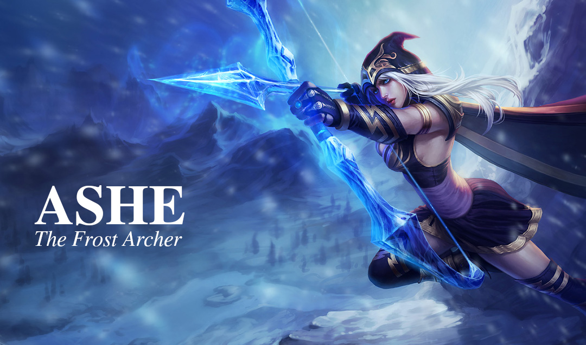
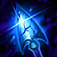
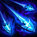

Introducing...
With each arrow she fires from her ancient ice enchanted bow, Ashe proves she is a master archer. She chooses each target carefully, waits for the right moment, and then strikes with power and precision. It is with this same vision and focus that she pursues her goal of uniting the tribes of the Freljord and forging them into a mighty nation.
Abilities
-

- Q: Ashe's Q is Frost Shot. This slows the enemy by 35% at level 18 and scales on physical damage.
- W: Volley. Ashe fires out 3 arrows infront of her. The slow from Frost Shot applies to Volley.
- E: Hawkshot. Grants vision and has a long range. Passive grants Ashe more gold upon killing a minion.
- R: Enchanted Crystal Arrow. Ashe fires an enchanted arrow that has global range. Scales on magic damage.
